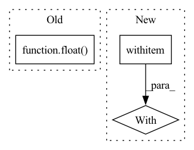

Pattern ID :6512
Before Change
model.to(device)
best_score = float( "-inf")
best_model = None
for iteration in tqdm(range(max_iterations)):
After Change
c = 0
model.train()
with tqdm(train) as progress:
for i, batch in enumerate(progress):
for key in batch:
if not torch.is_tensor(batch[key]):
continueIn pattern: SUPERPATTERN
Frequency: 4
Non-data size: 3
Instances Fragment ID: 22555374
Project Name: tiagomantunes/karen
Commit Name: 53298391d3359a8d3c02b9fe84ccf36d2ec00950
Time: 2021-05-28
Author: tiago.melo.antunes@gmail.com
File Name: framework/training.py
M Class Name: AnonimousClass
N Class Name: AnonimousClass
M Method Name: train(9)
N Method Name: train(9)
M Parent Class:
N Parent Class:
M File Name: framework/training.py
N File Name: framework/training.py
M Start Line: 35
M End Line: 84
N Start Line: 35
N End Line: 89
Before Change
output = model(data_batch)
loss = loss_func(output, target_batch)
loss_ = loss.detach().clone()
loss.div_(math.ceil(float( len(data)) / args.batch_size))
loss.backward()
with torch.no_grad():After Change
loss.backward()
else:
if i < args.batches_per_allreduce:
with model.no_sync():
loss.backward()
else:
loss.backward()
Fragment ID: 22555375
Project Name: gpauloski/kfac-pytorch
Commit Name: c3fcd61225f75c5c0e412d60183be6c62599bfae
Time: 2020-06-28
Author: gpauloski@yahoo.com
File Name: examples/cnn_utils/engine.py
M Class Name: AnonimousClass
N Class Name: AnonimousClass
M Method Name: train(9)
N Method Name: train(9)
M Parent Class:
N Parent Class:
M File Name: examples/cnn_utils/engine.py
N File Name: examples/cnn_utils/engine.py
M Start Line: 21
M End Line: 57
N Start Line: 21
N End Line: 65
Before Change
If new is higher than old, there is a chance it will be accepted,
less likely for larger differences.
w = math.exp(min(0, -float( energy_new - energy_old) * self.beta))
rand = self.random_gen.uniform()
return w >= rand
After Change
If new is higher than old, there is a chance it will be accepted,
less likely for larger differences.
with np.errstate(invalid="ignore"):
// The energy values being fed to Metropolis are 1-length arrays, and if
// they are equal, their difference is 0, which gets multiplied by beta,
// which is inf, and array([0]) * float("inf") causes
//
// RuntimeWarning: invalid value encountered in multiply
//
// Ignore this warning so so when the algorithm is on a flat plane, it always
// accepts the step, to try to move off the plane.
prod = -(energy_new - energy_old) * self.beta
w = math.exp(min(0, prod))
rand = self.random_gen.uniform() Fragment ID: 22555376
Project Name: scipy/scipy
Commit Name: fdd4305158599545019cac7cdd7a1199a85c0ccd
Time: 2020-04-26
Author: nico.schloemer@gmail.com
File Name: scipy/optimize/_basinhopping.py
M Class Name: Metropolis
N Class Name: Metropolis
M Method Name: accept_reject(3)
N Method Name: accept_reject(3)
M Parent Class: object
N Parent Class: object
M File Name: scipy/optimize/_basinhopping.py
N File Name: scipy/optimize/_basinhopping.py
M Start Line: 311
M End Line: 311
N Start Line: 311
N End Line: 323